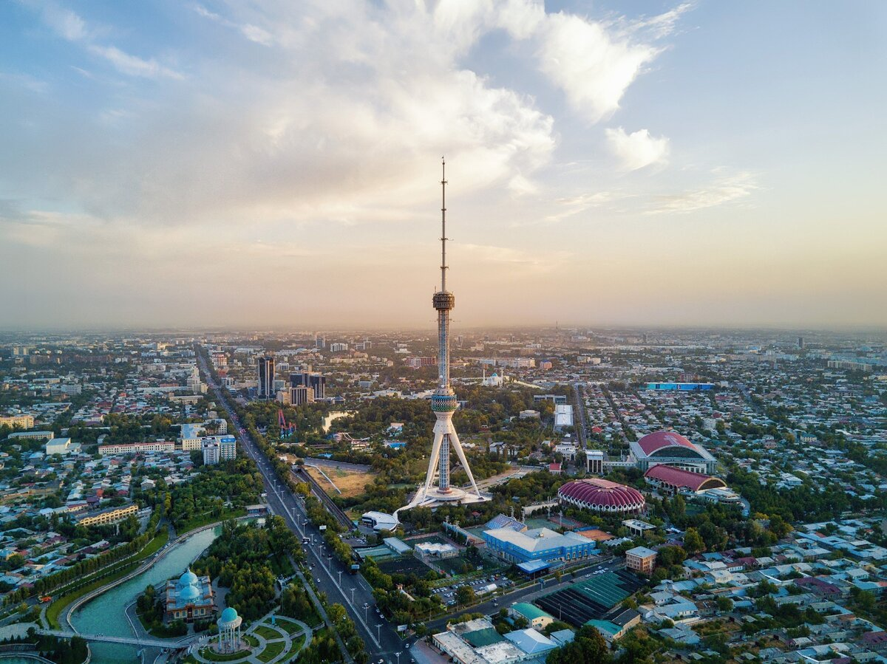

Toshkent
Toshkent — Markaziy Osiyoning yirik qadimiy shaharlaridan biri, Oʻzbekiston Respublikasining poytaxti. Oʻrta Osiyoning ulkan sanoat-transport chorraxasi va madaniyat markazlaridan biri. Mamlakatning shimoli-sharqiy qismida, Tyanshan togʻlari etaklarida, 440-480 m tepalikda, Chirchiq daryosi vodiysida joylashgan. Aholisi 2 485 900 kishini tashkil etadi (2020).[4] Maydoni 334,8 km². 2007-yili Toshkent Islom madaniyati markazi, deb eʼlon qilindi. Bunga sabab sifatida shaharda koʻplab tarixiy islomiy inshootlar va Toshkent Islom Universiteti borligi, shahar madaniy tarixi islomiy anʼanalar bilan bogʻlanganligidir.
